漫画版
最終話「赤い糸の先」
資料室・最終報告の確認
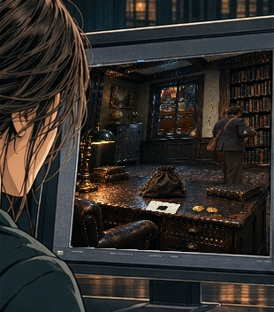
報告書には男が写っています。窓の外に赤い傘、机には封筒とメダル。

水城は届いた記録媒体を端末につないだ。
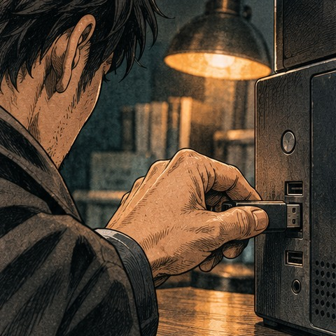
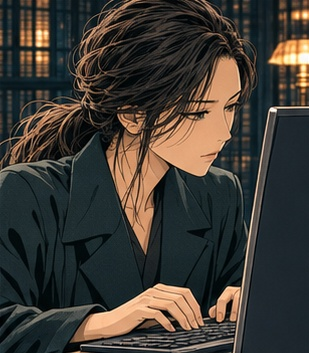
作業用データで人物の表示だけ外します。窓と机を見ていてください。
1 / 4
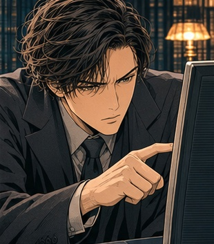
消えたのはこの人物の部分だけ。机もランプも窓の傘も、位置は変わっていない。

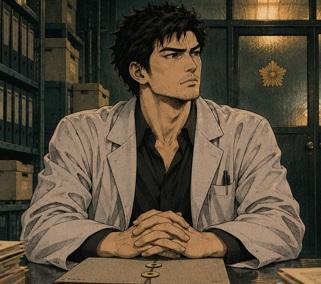
男の輪郭は、蔵の市の写真と合う。肘の当て布と肩紐が同じだ。
2 / 4
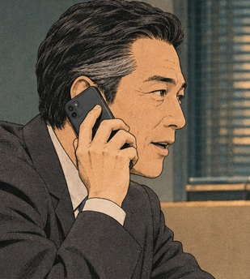
別々の写真を重ねた一枚で、男を指示役とした。根拠が崩れた。最終報告は撤回する。
撤回の手続きが済み、係長から通知が引き渡された。
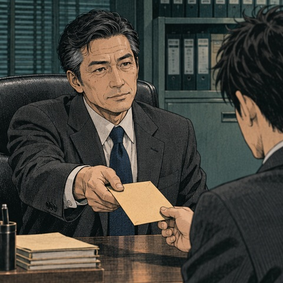
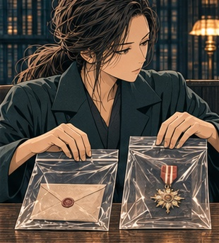
撤回通知が出た日
撤回通知と原本は別の袋に入れます。
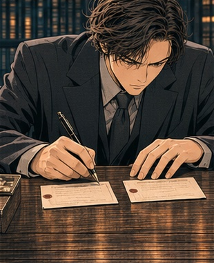
この写真では男を指示役とする証拠にならない。男の関与そのものには、別の証拠が要る。
3 / 4
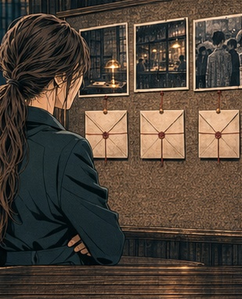
切り口と傷がつながった三通の封。その糸は残した。
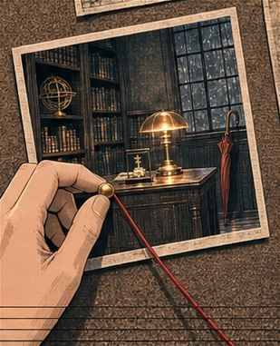
男の写真と書斎を結んでいた糸を、水城は外した。
4 / 4
おまけ 水城の休日
最後まで読んでくださり、ありがとうございました。
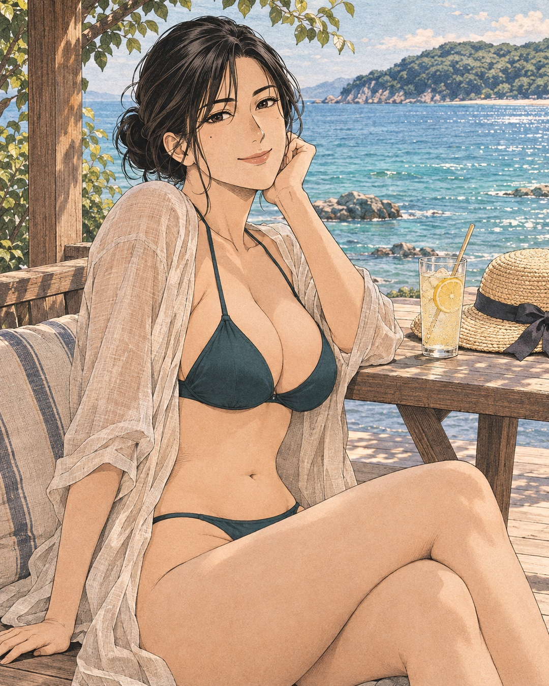